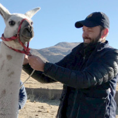
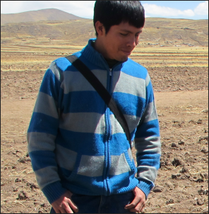
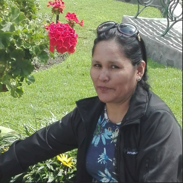
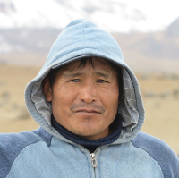
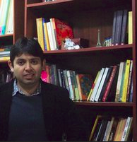
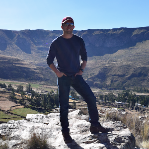
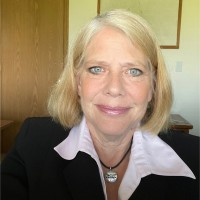
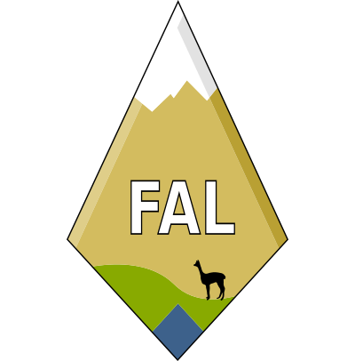
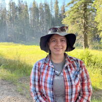

home | publications | resources | news | members | photos | opportunities | contribute

Randy Haas
Lab head
assistant professor, University of Wyoming Department of Anthropology
ORCID: 0000-0002-7742-2127
email: whaas@uwyo.edu
Carlos Viviano Llave
co-director of Peruvian field research
Virginia Inacoña Huaraya
Lab coordinator, Peruvian field research
Mateo Inacoña Huaraya
Field coordinator, Peruvian field research
Luis FLores-Blanco
PhD candidate, University of California, Davis
ORCID: 0000-0003-2344-6542
Tom Snyder
PhD candidate, University of California, Davis
ORCID: 0000-0003-3511-7287
Jennifer Chen
PhD candidate, Penn State University
ORCID: 0000-0001-7402-5946
Julie Julison
PhD student, Wayne State University Department of Anthropology
Bryan Lamorena
MA student, Wayne State University Department of Anthropology
Mikayla Rosario
PhD student, University of Wyoming Department of Anthropology
ORCID: 0009-0003-5818-7074